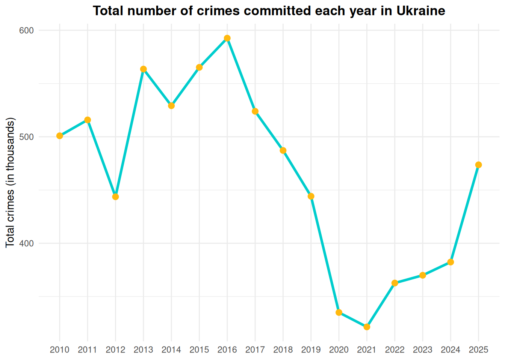
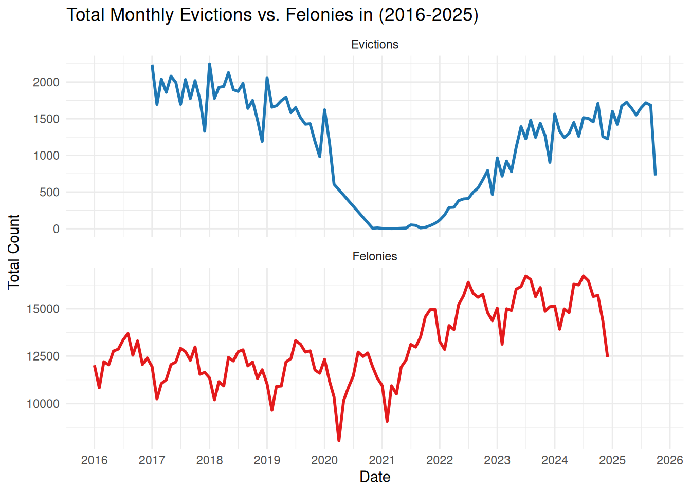
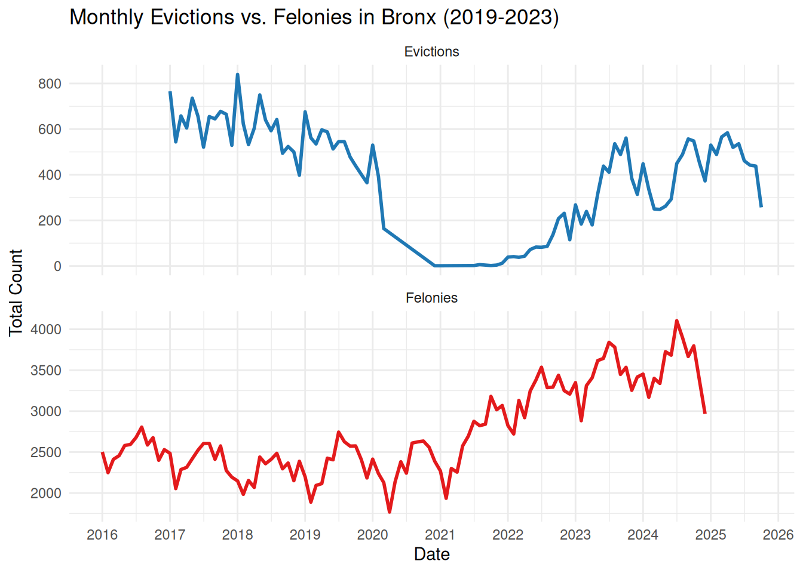
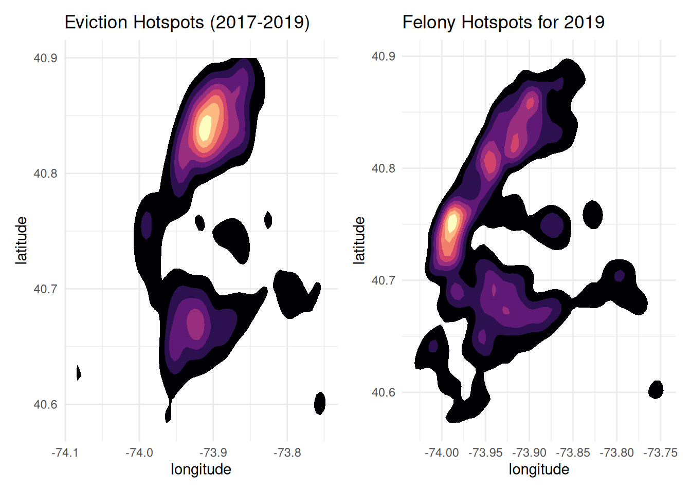

library(arrow)
library(readr)
library(tidyverse)
library(lubridate)
library(readxl)
library(rvest)
library(tidyr)
library(plotly)
library(scales)
library(sf)
library(janitor)
library(stringr)
library(lubridate)
library(tidyr)
library(patchwork)Crime Analysis
Import Libraries
Read The data
# Download complaint data
complaint_data <- read_csv("data/NYPD_Complaint_Data_Historic_20251019.csv")
complaint_data_full <- read_parquet("data/NYPD_Complaint_Data_Historic_20251021.parquet") |>
clean_names()
evictions <- read_csv_arrow("data/Evictions_20251019.csv")
df_full_evictions <- read_csv_arrow("data/Evictions_20251021.csv") |>
clean_names()Parse the data
# Parse ukrainian crime rates data:
url <- "https://uk.wikipedia.org/wiki/Злочинність_в_Україні"
page <- read_html(url)
tabs <- page %>%
html_elements("table.wikitable")
crime_ukr <- tabs[[1]] %>%
html_table(fill = TRUE)Preprocess data
# First group complaint dataset by year and find out number of complaints each year:
complaint_summary <- complaint_data %>%
mutate(
date = mdy(CMPLNT_FR_DT),
year = year(date)
) %>%
filter(year >= 1900) %>%
rename(
NYC_district = BORO_NM
)
# Group by year and borough, count number in each group
by_year_borough <- evictions %>%
mutate(
exec_date = mdy(`Executed Date`),
year = year(exec_date),
borough = toupper(BOROUGH)
) %>%
count(year, borough, name = "n") %>%
arrange(year, borough) %>%
collect()
# Clean and process ukrainian crime rates data (add extra 2 missing rows):
crime_ukr <- crime_ukr %>%
filter(!is.na(рік), рік >= 2010) %>%
mutate(
total_crimes = str_replace_all(`всього злочинів`, "\\D", ""),
total_crimes = na_if(total_crimes, ""), # keep blanks as NA
total_crimes = as.integer(total_crimes)
) %>%
select(рік, total_crimes)
crime_ukr <- add_row(crime_ukr, рік = 2024, total_crimes = 382335)
crime_ukr <- add_row(crime_ukr, рік = 2025, total_crimes = 473662)Visualizations
Crime in Ukraine
ggplot(crime_ukr, aes(x = рік, y = total_crimes / 1000)) +
geom_line(color = "#00CDCD", size = 1.2) +
geom_point(color = "#FFB90F", size = 2.5) +
scale_x_continuous(breaks = crime_ukr$рік) +
labs(title = "Total number of crimes committed each year in Ukraine",
x = NULL,
y = "Total crimes (in thousands)") +
theme_minimal() +
theme(
plot.title = element_text(face = "bold", hjust = 0.5),
panel.grid.minor.x = element_blank()
)Warning: Using `size` aesthetic for lines was deprecated in ggplot2 3.4.0.
ℹ Please use `linewidth` instead.
NYC crime complaints by years
show code
crime_year <- complaint_summary |>
filter(!is.na(year), year >= 2000, year <= 2025) |>
count(year, name = 'complaints') |>
arrange(year)
complaint_vis <- ggplot(crime_year, aes(x = year, y = complaints, group = 1, text = paste0(
'year: ', year,
'\ncomplaints: ', comma(complaints)
))) +
geom_line(color = '#2F539B', linewidth = 1) +
scale_y_continuous(labels = comma) +
scale_x_continuous(breaks = pretty_breaks(n = 5)) +
labs(
title = 'NYC crime complaints by year',
x = 'year', y = 'number of complaints'
) +
theme_minimal() +
theme(
plot.background = element_rect(fill = '#F5F5F5'),
panel.background = element_rect(fill = '#F5F5F5'),
panel.grid.major.y = element_line(color = "#728FCE"),
panel.grid.major.x = element_blank(),
panel.grid.minor = element_blank(),
text = element_text(face = 'italic')
)
complaint_interactive <- ggplotly(complaint_vis, tooltip = 'text') |>
layout(
hovermode = 'x unified',
yaxis = list(tickformat = ',d')
)
complaint_interactiveeviction_monthly <- df_full_evictions %>%
select(borough, executed_date) %>%
mutate(executed_date = as_date(executed_date, format = "%m/%d/%Y")) %>%
dplyr::filter(
executed_date >= "2016-01-01" & executed_date <= "2025-12-31",
!is.na(borough),
borough != "Citywide"
) %>%
mutate(borough = str_to_title(borough)) %>%
mutate(
month_year = floor_date(executed_date, "month")
) %>%
group_by(month_year) %>%
summarise(total_count = n()) %>%
collect() %>%
mutate(type = "Evictions")
crime_monthly <- complaint_data_full %>%
select(boro_nm, cmplnt_fr_dt, law_cat_cd) %>%
mutate(cmplnt_fr_dt = as_date(cmplnt_fr_dt, format = "%m/%d/%Y")) %>%
dplyr::filter(
cmplnt_fr_dt >= "2016-01-01" & cmplnt_fr_dt <= "2025-12-31",
!is.na(boro_nm),
law_cat_cd == "FELONY"
) %>%
mutate(borough = str_to_title(boro_nm)) %>%
mutate(
month_year = floor_date(cmplnt_fr_dt, "month")
) %>%
group_by(month_year) %>%
summarise(total_count = n()) %>%
collect() %>%
mutate(type = "Felonies")
bind_rows(eviction_monthly, crime_monthly) |>
ggplot(aes(x = month_year, y = total_count, color = type)) +
geom_line(linewidth = 1) +
facet_wrap(~ type, ncol = 1, scales = "free_y") +
scale_x_date(date_breaks = "1 year", date_labels = "%Y") +
scale_color_manual(values = c("Evictions" = "#1f78b4", "Felonies" = "#e31a1c")) +
labs(
title = paste("Total Monthly Evictions vs. Felonies in (2016-2025)"),
x = "Date",
y = "Total Count"
) +
theme_minimal() +
theme(legend.position = "none")
target_borough <- "Bronx"
eviction_monthly <- df_full_evictions %>%
select(borough, executed_date) %>%
mutate(executed_date = as_date(executed_date, format = "%m/%d/%Y")) %>%
dplyr::filter(
executed_date >= "2016-01-01" & executed_date <= "2025-12-31",
!is.na(borough),
borough != "Citywide"
) %>%
mutate(borough = str_to_title(borough)) %>%
dplyr::filter(borough == target_borough) %>%
mutate(
month_year = floor_date(executed_date, "month")
) %>%
group_by(month_year) %>%
summarise(total_count = n()) %>%
collect() %>%
mutate(type = "Evictions")
crime_monthly <- complaint_data_full %>%
select(boro_nm, cmplnt_fr_dt, law_cat_cd) %>%
mutate(cmplnt_fr_dt = as_date(cmplnt_fr_dt, format = "%m/%d/%Y")) %>%
dplyr::filter(
cmplnt_fr_dt >= "2016-01-01" & cmplnt_fr_dt <= "2025-12-31",
!is.na(boro_nm),
law_cat_cd == "FELONY"
) %>%
mutate(borough = str_to_title(boro_nm)) %>%
dplyr::filter(borough == target_borough) %>%
mutate(
month_year = floor_date(cmplnt_fr_dt, "month")
) %>%
group_by(month_year) %>%
summarise(total_count = n()) %>%
collect() %>%
mutate(type = "Felonies")
bind_rows(eviction_monthly, crime_monthly) |>
ggplot(aes(x = month_year, y = total_count, color = type)) +
geom_line(linewidth = 1) +
facet_wrap(~ type, ncol = 1, scales = "free_y") +
scale_x_date(date_breaks = "1 year", date_labels = "%Y") +
scale_color_manual(values = c("Evictions" = "#1f78b4", "Felonies" = "#e31a1c")) +
labs(
title = paste("Monthly Evictions vs. Felonies in", target_borough, "(2019-2023)"),
x = "Date",
y = "Total Count"
) +
theme_minimal() +
theme(legend.position = "none")
eviction_points <- df_full_evictions %>%
select(borough, latitude, longitude, executed_date) %>%
mutate(executed_date = as_date(executed_date, format = "%m/%d/%Y")) %>%
dplyr::filter(
year(executed_date) == 2019,
!is.na(latitude), !is.na(longitude)
) %>%
mutate(
latitude = as.numeric(latitude),
longitude = as.numeric(longitude)
) %>%
dplyr::filter(
latitude > 40.4 & latitude < 40.9,
longitude > -74.3 & longitude < -73.6
) %>%
collect()
crime_points <- complaint_data_full %>%
select(c(boro_nm, latitude, longitude, cmplnt_fr_dt, law_cat_cd)) %>%
mutate(
cmplnt_fr_dt = as_date(cmplnt_fr_dt, format = "%m/%d/%Y"),
latitude = as.numeric(latitude),
longitude = as.numeric(longitude)
) %>%
dplyr::filter(
year(cmplnt_fr_dt) == 2019,
law_cat_cd == "FELONY",
!is.na(latitude), !is.na(longitude)
) %>%
dplyr::filter(
latitude > 40.4 & latitude < 40.9,
longitude > -74.3 & longitude < -73.6
) %>%
collect()
plot_evictions <- ggplot() +
stat_density_2d(
data = eviction_points,
aes(x = longitude, y = latitude, fill = ..level..),
geom = "polygon"
) +
scale_fill_viridis_c(option = "magma") +
theme_minimal() +
theme(legend.position = "none") +
labs(title = "Eviction Hotspots (2017-2019)")
plot_felonies <- ggplot() +
stat_density_2d(
data = crime_points,
aes(x = longitude, y = latitude, fill = ..level..),
geom = "polygon"
) +
scale_fill_viridis_c(option = "magma") +
theme_minimal() +
theme(legend.position = "none") +
labs(title = "Felony Hotspots for 2019")
plot_evictions + plot_feloniesWarning: The dot-dot notation (`..level..`) was deprecated in ggplot2 3.4.0.
ℹ Please use `after_stat(level)` instead.
NYC Crime Complaints by Borough
show code
# options(tigris_class = "sf", tigris_use_cache = TRUE)
# crime_by_year_borough <- complaint_data %>%
# mutate(
# date = mdy(CMPLNT_FR_DT),
# year = year(date),
# borough = toupper(BORO_NM)
# ) %>%
# filter(!is.na(year), year >= 2000, year <= 2025) %>%
# group_by(year, borough) %>%
# summarise(complaints = sum(count, na.rm = TRUE), .groups = "drop") %>%
# mutate(year = as.integer(year))
# crime_by_year_borough <- crime_by_year_borough %>%
# complete(
# year = 2000:2025,
# borough = c("MANHATTAN","BROOKLYN","QUEENS","BRONX","STATEN ISLAND"),
# fill = list(complaints = 0)
# )
# nyc_boroughs <- counties(state = "NY", year = 2023) %>%
# filter(NAME %in% c("New York","Kings","Queens","Bronx","Richmond")) %>%
# mutate(
# borough = case_when(
# NAME == "New York" ~ "MANHATTAN",
# NAME == "Kings" ~ "BROOKLYN",
# NAME == "Queens" ~ "QUEENS",
# NAME == "Bronx" ~ "BRONX",
# NAME == "Richmond" ~ "STATEN ISLAND"
# )
# )
# crime_map <- left_join(nyc_boroughs, crime_by_year_borough, by = "borough")
# max_value <- max(crime_by_year_borough$complaints, na.rm = TRUE)
# p <- ggplot(crime_map, aes(group = borough)) +
# geom_sf(aes(fill = complaints), color = "white", linewidth = 0.4) +
# scale_fill_gradient(
# low = "#C7E9B4", high = "#081D58",
# limits = c(0, max_value), na.value = "grey90"
# ) +
# labs(
# title = "NYC Crime Complaints by Borough",
# subtitle = "Year: {closest_state}",
# fill = "Complaints"
# ) +
# theme_minimal(base_size = 13) +
# transition_states(year, transition_length = 2, state_length = 1) +
# ease_aes("linear")
# animate(p, nframes = 25, fps = 5, width = 800, height = 600, renderer = gifski_renderer())